Theoretical Section
1.1 Ethernet standards for physical layer, ethernet limits, Ethernet frame
The formal specifications for the ethernet standards are specified by IEEE. The standards have two main characteristics which are the speed and medium used. The main limit of ethernet is the maximum range in which the data can be transmitted by a cable in given standard.
Table showcasing some of the standards for physical layer ethernet
| Standard | Speed | Medium | Range |
|---|---|---|---|
| 10BASE-T | 10 Mbps | Twisted pair | 100m |
| 100BASE-TX | 100 Mbps | Cat5 twisted pair (2 pairs) | 100m |
| 1000BASE-LX | 1000 Mbps | Single/multi-mode fiber | 316m |
| 1000BASE-TX | 1000 Mbps | Cat5 twisted pair | 100m |
| 10GBASE-T | 10 Gbps | Cat6 twisted pair | 55m |
| 10GBASE-LR | 10 Gbps | Single-mode fiber | 10km |
Ethernet Frame
Ethernet frame is a data unit used in data link layer of the OSI/ISO model.
Structure of an ethernet frame:
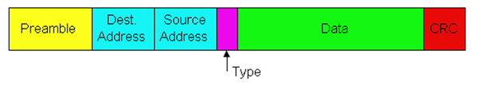1.2 MAC address, broadcasting
MAC addresses are unique 48-bit hardware numbers of a computer that are embedded into a network card during manufacturing. The MAC Address is also known as the Physical Address of network device. The MAC address is used by the Media Access Control sublayer of data-link layer. MAC address is worldwide unique. .
Broadcasting
Broadcasting is a communication mechanism where a message is sent to all nodes in a network.
1.3 Difference between hub, switch, router
| Hub | Switch | Router |
|---|---|---|
| Physical Layer | Data link layer | Network layer |
| Works on the basis of broadcasting. | Works on the basis of MAC address. | Works on the basis of IP address. |
| Multiport repeater in which a signal introduced at the input of any port appears at the output of the all available ports. | Tele-communication device which receives a message from any device connected to it and then transmits the message only to the device for which the message is intended. | Reads the header of incoming packet and forward it to the port for which it is intended there by determines the route. It can also perform filtering and encapsulation. |
| At least single network is required to connect. | At least single network is required to connect. | Needs at least two networks to connect. |
| Cheaper as compared to switch and router. | More expensive device than hub. | Relatively much more expensive device than hub and switch. |
| Used in LANs. | Used in LANs. | Used in LANs, MANs and WANs. |
1.4 CSMA/CD, collision, half and full duplex
CSMA/CD (Carrier Sense Multiple Access / Collision Detection) Used in early Ethernet (especially bus topology with coaxial cable) where many devices shared the same medium.
Half-Duplex: Devices can either send or receive, but not both at the same time (e.g., walkie-talkies). CSMA/CD is required here.
Full-Duplex: Devices can send and receive simultaneously. No CSMA/CD is needed because collisions cannot occur.
1.5 ARP request, detecting doubled IP address
The acronym ARP stands for Address Resolution Protocol which is one of the most important protocols of the Data link layer in the OSI model. It is responsible to find the hardware address of a host from a known IP address.
Gratuitous ARP
The host's ARP request known as "gratuitous ARP" aids in locating duplicate IP addresses. This is a broadcast request for the router's IP address. All other nodes are unable to use the IP address assigned to a switch or router in the event that it sends out an ARP request to obtain its IP address and receives no ARP answers in return. However, another node uses the IP address assigned to the switch or router if it sends an ARP request for its IP address and gets an ARP response.
1.6 BOOTP, DHCP
BOOTP represents an older protocol, which provides static configuration; as in, every time this device connects, it is assigned the same IP address.
DHCP, on the other hand, represents a modern protocol of dynamic allocation of IP addresses, which makes it really flexible and efficient in the management of large and dynamic networks.
BOOTP is a network protocol for assigning an IP address to every piece of networking equipment and providing all the major configuration information.
DHCP refers to Dynamic Host Configuration Protocol. This is a network protocol used for automating the process of assigning IP addresses and other network configurations to devices on a network.
Devices request and obtain an IP address and configuration information from the DHCP server.
DHCP Process
1.7 VLANs
A Virtual Local Area Network (VLAN) is a logical segmentation of a Layer 2 (Data Link Layer) network that enables devices to be grouped together regardless of their physical location. Unlike traditional LANs that rely on physical topology, VLANs are implemented in switches using IEEE 802.1Q VLAN tagging.
Practical Section
2.1 Find MAC address using ipconfig; gateway MAC using Wireshark
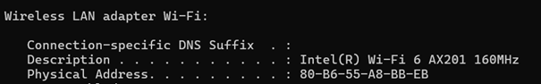2.2 Find producer of network adapter
Intel Corporate
2.3 Flush ARP cache
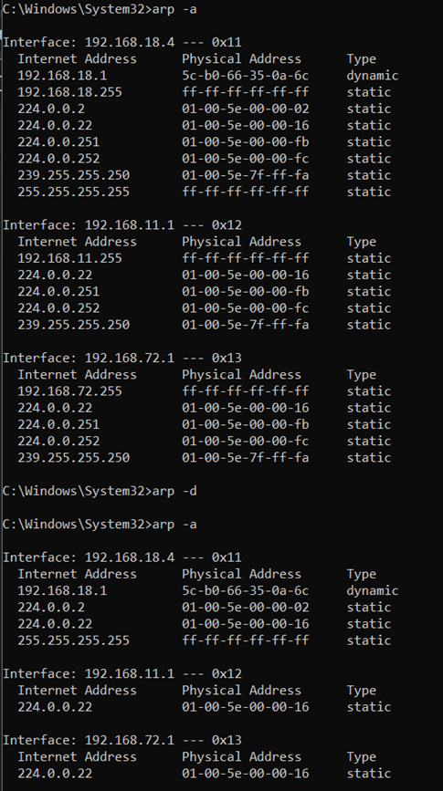2.4 Set the same IP address on two different hosts in the lab and detect it using arp request
Output of ipconfig command on host 1 (PC):
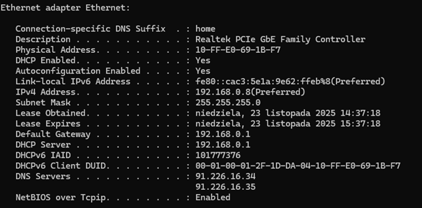Output of ipconfig command on host 2 (Laptop):
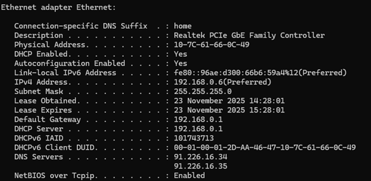Output of ipconfig command on host 1 after changing the IP address to the one used by host 2. As we can see the PC sees the IP address is a duplicate and assigns some autoconfiguration IPv4 address:
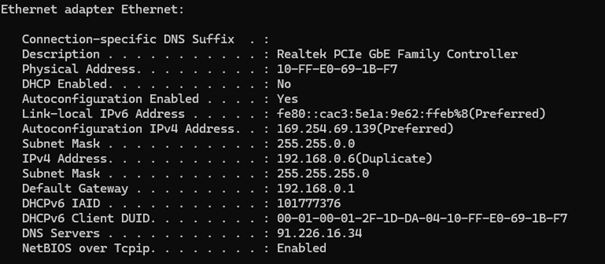 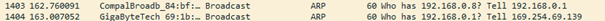2.5 Using Wireshark save the packets required to obtain IP address through DHCP
Achieved by renewing IP address with ipconfig
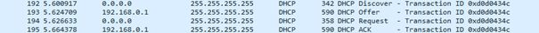2.6 Release and renew IP address
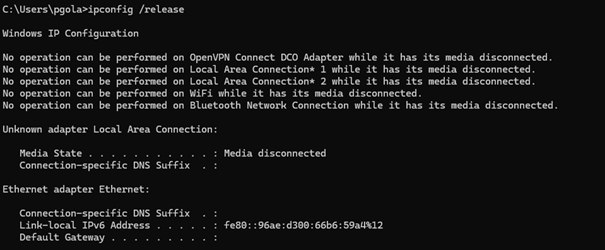We can see that the IP address that my computer had has been dropped.
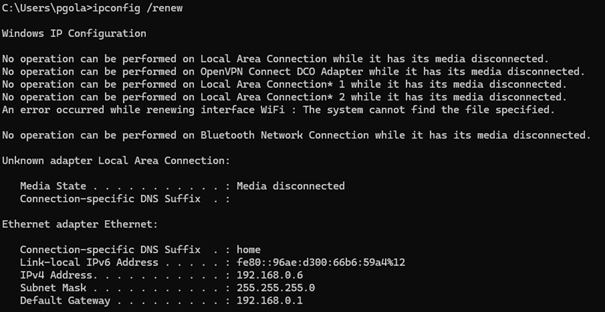And in this example, the computer was reassigned a new IP address.
2.7 Change MAC address of a computer in the lab to the same as the MAC address of the other computer in the lab and verify IP address obtained
Output of ipconfig command before the change of the MAC address:
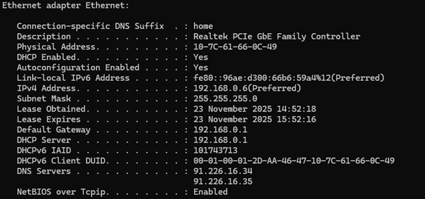Output of ipconfig command after the change of MAC address:
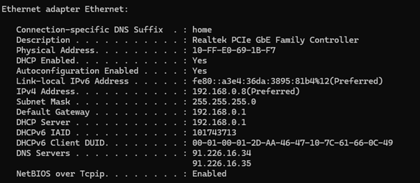As we can see the IP address changed to the one used by the other computer used in task 2.4